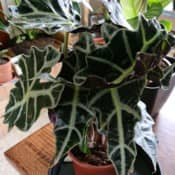
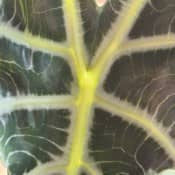
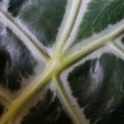
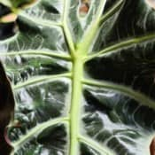
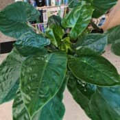
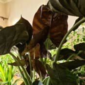
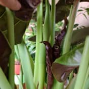

Nom
Exposition en été
Exposition en hiver
Arrosage en été
Arrosage en hiver
Rempotage
Alocasia amazonica pollyVoir la galerie photo




Je la mets dans une situation lumineuse sans soleil direct.
Je la sors en prenant soin de la laisser ou elle ne recevra pas de soleil direct.
Je ne la mets pas trop loin d'une fenêtre afin qu'elle reçoive assez de lumière en attendant qu'elle entre en période de repos.
Endroit oscillant aux alentours de 18°C - 20°C.
En été, je l'arrose de façon régulière et modérée afin que le substrat reste humide ou ne sèche qu'un peu.
Lorsqu'il fait chaud durant une période plus longue qu,une semaine, ce sera généralement un bassinage et vu la chaleur ambiante la motte ne restera pas trop trempée assez longtemps pour l'installation de moisissure.
Je fais également attention à ce qu'elle ne manque pas d'humidité ambiante car elle n'aime pas l'air sec.
En hiver, je diminue les arrosages pour la période de repos de la plante.
Je prépare un mélange de bon terreau pour plantes d'intérieur auquel je rajoute un peu de fibre de coco et du sable de rivière pour le drainage.
Je le préfère dans un pot en plastique de bonne taille.
Nom
Exposition en été
Exposition en hiver
Arrosage en été
Arrosage en hiver
Rempotage
Alocasia wentiiVoir la galerie photo



Je l'installe dans une situation mi-ensolleillée ou il recevra du soleil matinal ou du soir mais pas celui de midi de manière directe.
De préférence en extérieur vu la taille de ma plante.
En hiver, je le laisse perdre son feuillage au froid pour une période de dormance.
Je ne la protègerai que lors de grosses gelées avec un paillage et coffrage ou la rentrerai dans une pièce froide.
Cette plante aime beaucoup l'humidité et donc, j'arrose régulièrement afin que le substrat reste toujours humide ou ne sèche qu'un peu seulement.
En hiver vu que la plante est en période de dormance, je n'arrose pas et je laisse faire la pluie.
Je prépare d'abord un mélange composé d'un bon terreau pour plantes d'intérieur auquel je rajoute un peu de fibre de coco et du sable de rivière.
Je la préfère dans un bac en plastique de grande taille.